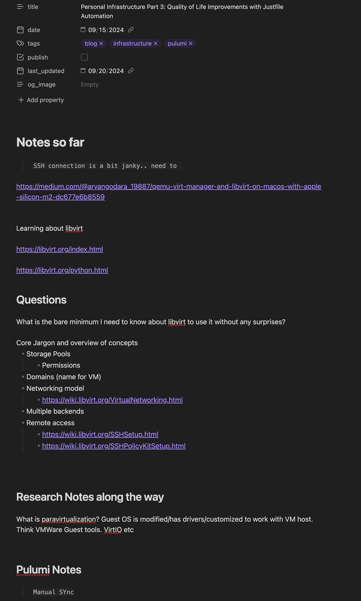

How to Solve Any Problem and Win
Published on September 27, 2024 | Last updated on September 27, 2024
In this article I describe in broad strokes how I approach any problem and succeed.
To demonstrate that such a bold claim is true, I'll start with a few definitions to make sure we're on the same page. These are my definitions for this article, and I advise against thinking of them as any universal truth.
- Problem: An obstacle preventing the realization of a mentally conceived state or experience.
- Success: The achievement or realization of a mentally conceived state or experience.
Given these definitions, a problem presupposes the intention to achieve a mentally conceived state or experience. It follows that to solve a problem, there most first be an intended state, and there must be an obstacle preventing it.
Given this, the first step to solve any problem is to ask yourself: Is this really a problem? For it to be a problem, you must first have a conception of what success "looks like." Otherwise, you will never be able to determine if you achieved it.
Once you know what the desired state or experience is, ask yourself: What is preventing the achievement of this state or experience?
Once these two questions are answered, solving the problem flows naturally.
I'll add that some problems may take so long to solve that they are effectively unsolvable. In this case, this process may not be of much use to anyone.
Concrete Example
These definitions are rather abstract. As my writings this far have focused on highly technical aspects of computer programming, I'll choose a concrete examples and explore it.
Currently I'm in the process of building a Personal Cloud or as I've named it earlier Personal Infrastructure. My architecture as outlined in Personal Infrastructure Part 5: Core Supporting Services calls for running virtual machines on physical servers. I've chosen to try to use libvirt, specifically using the kvm virtualization technology. I'd like to use Terraform or Pulumi to quickly spin up VMs on one of my several physical machines by running a single command, or possibly just by committing code to a repository. Although not fully and rigorously specified in language, success looks a bit like this:
$ kubectl get nodes
NAME STATUS ROLES AGE VERSION
worker-node1 Ready <none> 7d2h v1.22.5
worker-node2 Ready <none> 7d1h v1.22.5
master-node Ready master 7d3h v1.22.5
$ git commit -m "Add another VM for K8s cluster"
[master 3a1b2c3] Add another VM for K8s cluster
1 file changed, 10 insertions(+), 2 deletions(-)
$ git push
Enumerating objects: 5, done.
Counting objects: 100% (5/5), done.
Delta compression using up to 8 threads
Compressing objects: 100% (3/3), done.
Writing objects: 100% (3/3), 354 bytes | 354.00 KiB/s, done.
Total 3 (delta 2), reused 0 (delta 0)
To github.com:yourusername/your-repo.git
abc1234..3a1b2c3 master -> master
$ sleep 30
$ kubectl get nodes
NAME STATUS ROLES AGE VERSION
worker-node1 Ready <none> 7d2h v1.22.5
worker-node2 Ready <none> 7d1h v1.22.5
worker-node3 Ready <none> 2m v1.22.5
master-node Ready master 7d3h v1.22.5
This imaginary transcript shows:
1) The beginning state: Three computers available in a kubernetes 2) The implied changing of some file or files 3) Pushing these changes to some server somewhere 4) Four computers available
Once this becomes realized, I'll have the delightful experience of being able to manifest virtual machines with a few keystrokes, a resounding success.
However, I have a problem: It doesn't work! I haven't even attempted anything with kubernetes, but I know there is a problem because when I run
$ pulumi up
I get lots of errors! So now what?
Problem Solving Strategy
First, when I appear to have encountered a problem, I ask myself "Is this really a problem?" Using the above words as guidance, for there to be a problem, there must be a intended mental conceived state or experience, and obstacle preventing its actualization. If there is no clear desired state, maybe there isn't a problem?
Having established that there is a problem, I divide problem solving into three main methods:
-
Intuitive Exploration: This method relies on a deep, subconscious understanding of the problem domain. In this method, one follows "gut feelings" or intuitions about potential solutions as the primary driver. While appearing random to an outside observer, these attempts are guided by an internal mental model that operates as a "black box" from the perspective of conscious reasoning.
-
Minimalist Learning: This approach involves acquiring only the essential knowledge required to solve the problem at hand. One attempts to build smallest mental model needed, followed by taking the minimum number of steps to solve the problem.
-
Comprehensive Modeling: This method aims to construct a "perfect" mental model of the problem space before taking action. Once this model is established, the solution becomes apparent, allowing for the implementation of the bare minimum actions needed to solve the problem.
These methodologies exist on a continuum, and their effectiveness varies depending on the nature of the problem and the one's expertise. In practice, a combination of these approaches often yields the most efficient path to resolution.
My personal algorithm for problem-solving typically follows this pattern:
-
Initial Intuition: If I have a strong intuition about a potential solution, I attempt it immediately and reassess based on the outcome.
-
Reassessment: If the intuitive approach proves unfruitful, I transition to expanding my mental model.
-
Information Gathering: This stage involves researching error messages, consulting various sources (including Large Language Models), and examining adjacent problems and solutions.
-
Rigorous Modeling: If the problem persists, I engage in comprehensive mental model building. This involves documenting all known information, identifying knowledge gaps, and engaging in deliberate research to fill these gaps. I may actualize my mental models using code, diagrams, or other tools.
-
Iterative Refinement: As the mental model evolves, I may return to intuitive attempts or conduct careful experiments to further refine my understanding and approach.
-
Systematic Experimentation: With a more complete mental model, I design and execute precise experiments to either solve the problem directly or gain deeper insights into the system's behavior.
An interesting aside is that this mental model can be applied to itself. Consider this: success can be defined as the ability to manifest any mental conception. In this context, the problem becomes not having a sufficient mental model to achieve something in the physical world. One can apply the ideas in this article to further refine the mental model. This process doesn't stop there. It's possible to then refine the mental model used to refine the initial mental model. This creates an infinite recursive spiral, potentially leading to enlightenment—or possibly insanity.
Problem Solving Diagram
What's Wrong with libvirt?
I've been applying my problem-solving strategy to the issue I described earlier. I probably won't write about all of it, but here are the concrete steps I've taken so far:
- Learn a bit about Pulumi.
- Create a quick and dirty
pulumiproject with the help of Cursor. - Try to run it.
- Encounter SSH permission issues.
This was the first clear obstacle preventing progress. I paused, then leaned into my intuition to start trying various things to debug SSH. I tried connecting manually with my user account. I tried the ansible_user account I was also using for Pulumi. When I encountered a failure, I started looking at my SSH keys, my known hosts file, and the authorized_keys file on the remote host.
After about 10 minutes, I realized the problem was actually that my .ssh/config file contained an entry for aslan with a username of igutek and a specified private key. From this, I tried adding a new entry for ansible_user with the correct private key specified, and then all was well.
This was a problem that was solved while staying almost entirely within my intuition. I then started plowing headfirst into Pulumi errors because I was using it wrong. The error messages made it clear, and I tried a few things "intuitively" before turning to the documentation with a bit of LLM assistance. I didn't read all the documentation, just the bare minimum to make forward progress.
With time, I moved past this and started seeing problems about insufficient permissions to do certain actions related to virtual machines. After 30 minutes of intuition and gentle expansion of my mental model through web searches, I moved on to rigorous modeling. For the rest of my working hours today — with the exception of time taken to write this article — I've been reading and learning about libvirt.
Bonus Material
I've hesitated a bit about sharing this, because maybe I'm worried about being judged for being stupid. However, I've decided to post it anyway.

A few things I'd like to call your attention to:
- I'm using Obsidian and Markdown
- This is a draft for a future article on isaac.cc
- When I started it, I did not know some words that might be embarrassingly obvious to some people, like paravirtualization
- My notes are mostly a scattered list of links and look chaotic. This is because I'm storing the minimal amount of information to proceed with my mental model building, most of which is... well mental. Should I decide to render some of these thoughts into text form, I will obviously clean it up